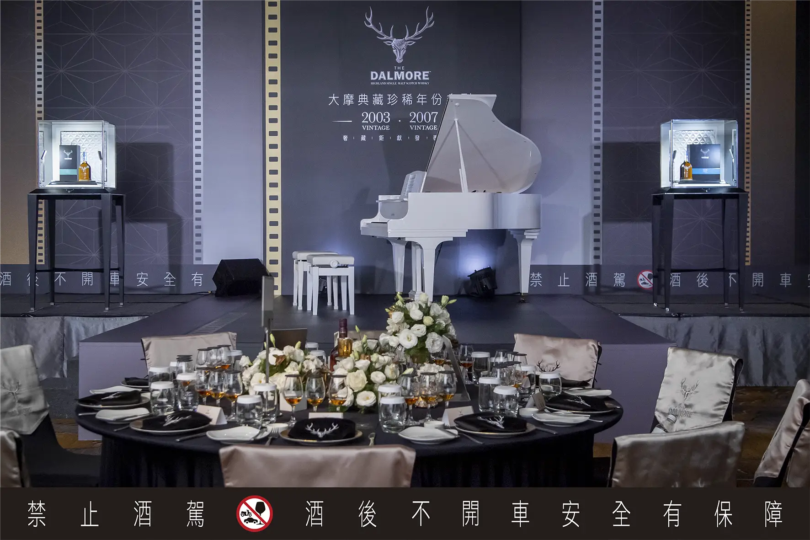
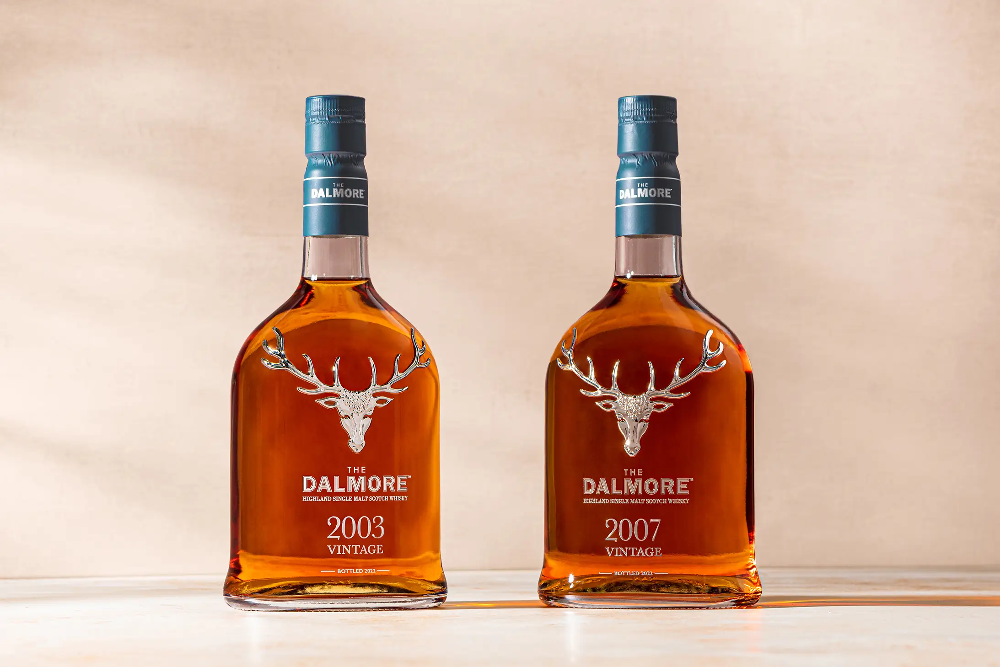
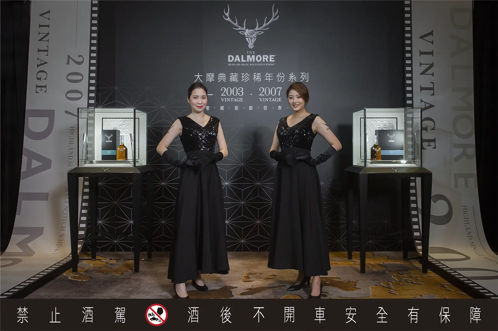
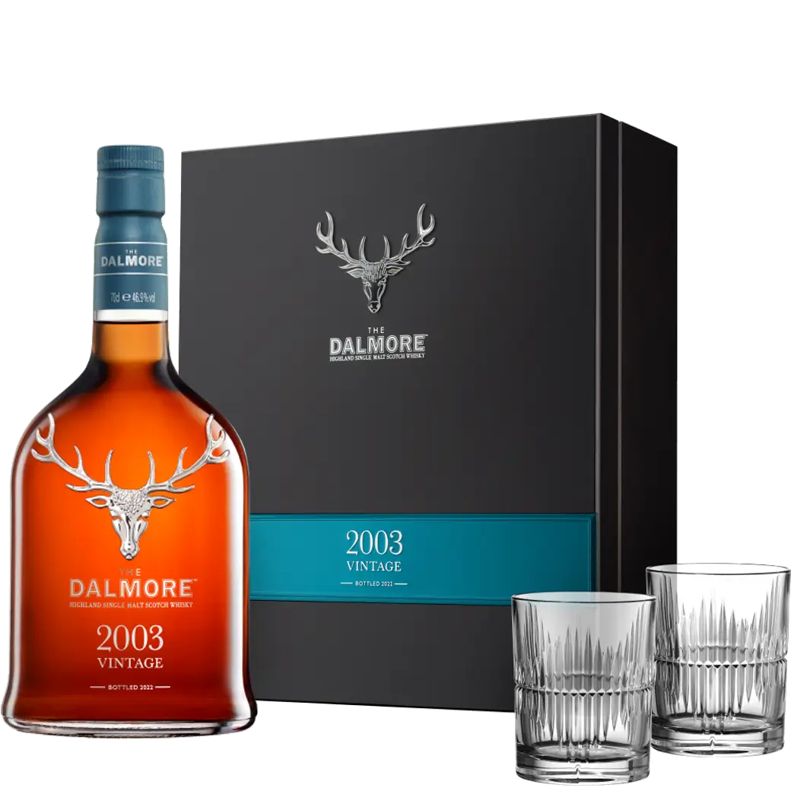
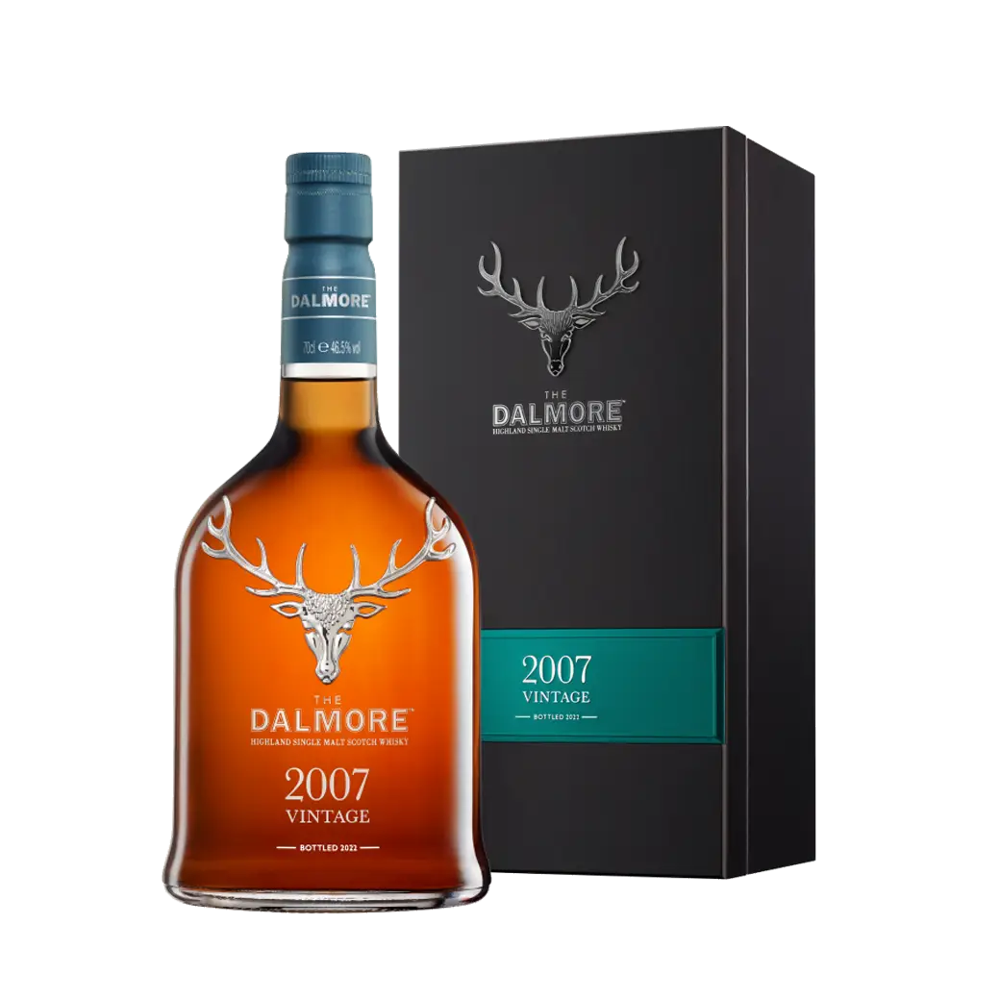

大摩典藏珍稀年份系列 第二版VINTAGE 2003/2007
雋永時光定義珍稀 奢藏木盒獨獻台灣
擁有最尊貴威士忌的大摩酒廠，去年發布全新系列《大摩典藏珍稀年份系列 Vintages 2002/2005》歡慶釀酒工藝至高成就，以限量精裝木盒版本獨獻台灣，成為去年最熱門的收藏話題。今年坐擁蘇格蘭最古老橡木桶藏的「老酒銀行」大摩酒廠，發布《大摩典藏珍稀年份系列 第二版 Vintages 2003/2007》。尚格酒業行銷總監張介怡Gity表示：「尚格酒業秉持著提供精品威士忌給台灣消費者的初衷，這次更為年度限量酒款 Vintage 2003、Vintage 2007 爭取獨獻台灣的精裝木盒包裝。」《大摩典藏珍稀年份The Dalmore Vintages》系列由大摩首席釀酒師 Richard Paterson，於 11 月手工挑選珍稀橡木桶，遵循大摩 50 年傳統熟成工序，展現鮮明的頂級威士忌風韻。每年持續推出的《大摩典藏珍稀年份The Dalmore Vintages》，今年推出的第二版本 ，限量Vintage 2003與Vintage 2007採用非冷凝過濾，呈現自然色澤，是威士忌收藏家與愛好者不容錯過的逸品。
手工淬選琥珀酒液 雋藏時光定義珍稀
蘇格蘭大摩酒廠的11月氣候環境，走過溫暖的夏季，來到溫度趨降的秋天，大摩老酒銀行裡的橡木桶在凜冬將至之前的11月，斂藏了酒廠一年的四季更迭，隨著氣候變換緩慢調節呼吸，最終將過去一年四季更迭的美好醞釀於酒液中，形成具有潛力的稀有珍釀。大摩威士忌釀酒師會在每年這個時節前往蒸餾廠，重新審視存放在歷史悠久倉庫中的熟成專用珍稀橡木桶，評估珍稀橡木桶和桶內待熟成的威士忌，唯有在這段期間被評為質性最獨特且具備鮮明特色的威士忌，才能獲選《大摩典藏珍稀年份》系列酒款。

大摩首席釀酒師，理查．派特森表示「《大摩典藏珍稀年份系列 The Dalmore Vintages》的第二年份版本，以Vintage 2003與Vintage 2007彰顯大摩非凡個性，它們從來自世界各地的稀有木桶中卓越而出，是體驗最非凡單一麥芽威士忌的絕佳機會，它不僅是嶄新、永遠不會再現的夢幻酒，同時也仍然是大摩經典。而這個系列將會持續推出，帶給消費者收藏每個珍稀年份的機會。並針對台灣市場推出獨家的精緻大氣的典藏木盒包裝」
《大摩典藏珍稀年份系列 Vintage 2003》 這款風味高雅的威士忌先於美國波本威士忌橡木桶中熟成之後，再將酒液過桶至 Rivesaltes甜葡萄酒桶、西班牙Matusalem 和 Amoroso 珍稀雪莉桶，以及數量有限的波本酒桶等手工嚴選橡木桶中，使風味臻至絕佳平衡。散發麥蘆卡蜂蜜、濃郁太妃糖與熟成香草莢的香氣，口感展現溫潤蜂蜜、楓糖糖漿和辛辣的黑色果實風味。尾韻則為陳年蜂蜜、古老英式果醬和甜香料味。2003年可說是大摩也是台灣的重要典藏年份，2003年大摩在「古巴雪茄與威士忌博覽會」榮獲「最優等酒款」尊榮稱號；而在台灣，2003年台北101大樓落成，成為當時年代「世界第一高樓」，至今仍是台灣在國際媒體上的主要視覺象徵。《大摩典藏珍稀年份系列 Vintage 2003》，這款18年的大摩威士忌，台灣限量372瓶，建議售價$15,000 ，裝盛於台灣獨家手工打造，附有Riedel威士忌對杯的精緻黑木盒中，以尊貴藍綠色襯出非凡年代2003的標記，送禮與收藏皆顯不凡格局。

《大摩典藏珍稀年份系列 Vintage 2007》 這款散發復古氣息的威士忌先於美國波本威士忌橡木桶中熟成之後，接著將酒液過桶至西班牙Matusalem、Apostoles 和 Amoroso珍稀雪莉桶，以及香甜的瑪莎拉（Marsala）葡萄酒桶等手工嚴選珍稀陳年橡木桶，令風味更加和諧馥郁。散發蜂蜜、現烤布里歐麵包和薑餅蛋糕的香氣；口感展現橙花蜂蜜、香料與柑橘風味；尾韻則為甜點、碎薑片和肉桂香味。2007是一個值得典藏的年份，大摩首席釀酒師—理查．派特森著手撰寫個人的第一本自傳「Goodness Nose」；而在台灣，2007年台灣高鐵正式營運，開啟台灣的高速時代，南北經濟文化交流更加便捷。《大摩典藏珍稀年份系列 Vintage 2007》，台灣限量5,940瓶，建議售價$6,500，並裝盛於台灣獨家的精緻黑色木盒，莫蘭迪綠襯出非凡年代2007的標記，彰顯不凡格局。


「大摩典藏珍稀年代Vintage 2003單一麥芽蘇格蘭威士忌」
- 橡木桶履歷：波本桶、Rivesaltes甜葡萄酒桶、西班牙Matusalem 和 Amoroso 珍稀雪莉桶
- 酒精濃度：46.9%
- 容量：700ml
- 香氣：麥蘆卡蜂蜜、濃郁太妃糖與熟成香草莢香氣
- 口感：圍繞著溫潤蜂蜜、楓糖糖漿和辛辣的黑色果實收尾點綴
- 餘韻：陳年蜂蜜、古老英式果醬和甜香料味，餘韻悠長。
- 建議售價：NTD 15,000(附有Riedel威士忌對杯)

「大摩典藏珍稀年代Vintage 2007單一麥芽蘇格蘭威士忌」
- 橡木桶履歷：波本桶、西班牙珍稀Matusalem雪莉桶、Apostoles雪莉桶、Amoroso雪莉桶，瑪莎拉葡萄酒桶
- 酒精濃度：46.5%
- 容量：700ml
- 香氣：蜂蜜、現烤布里歐麵包和薑餅蛋糕
- 口感：橙花蜂蜜、香料與柑橘風味
- 餘韻：甜點、碎薑片和肉桂尾韻，悠長縈繞。
- 建議售價：NTD 6,500
關於大摩The Dalmore
自1839年以來，Dalmore始終以勇敢、不凡的精神在威士忌世界脫穎而出，挑戰傳統，創造出獨特與大膽冒險的單一麥芽威士忌。大摩品牌的歷史可追溯到1263年，當時Clan Mackenzie的首領勇敢地拯救了蘇格蘭國王亞歷山大三世，皇室讚許其崇高的行為並授予Clan Mackenzie「12支鹿角勳章」。1867年，Mackenzie家族開啟大摩酒廠的經營歷史，從此，每一瓶大摩單一麥芽蘇格蘭威士忌得以自豪地將「12支鹿角的鹿首皇室徽章」做為永世傳承的品牌圖騰。榮耀的傳統不僅僅呈現在鹿首12金叉，這樣的精神更是銘刻在大摩酒廠的靈魂之中。以勇敢創新的狂想開啟蘇格蘭威士忌產業對於年份威士忌的追求，更以卓絕不凡的視野堅持老酒庫存的控管。時至今日，大摩以其傲視群雄的珍貴老酒，持續推出極致珍稀的超高年份蘇格蘭威士忌，成就大摩酒廠「老酒銀行」的不朽傳奇。